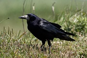
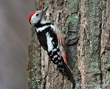
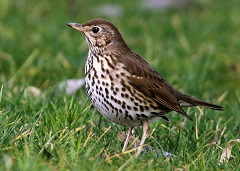

Вид
Птицы
Как всем известно,для птиц характерно наличие перьевого покрова,то есть их тело покрыто перьями,которые предохраняют тело от неблагоприятных изменений температуры. Также для птиц характерно наличие крыльев и клюва. Примеры:грач,дятел,дрозд и т.д
  